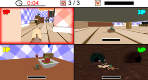

ASO BUSINESS COMPUTER FUKUOKA CALLEGE
Game School Area http://www.asojuku.ac.jp/abcc/
本校は3つの都市に12校の専門学校を擁する西日本随一の総合専門学校グループです。東京ゲームショウには麻生情報ビジネス専門学校福岡校のゲームクリエータ科、ゲームクリエータ専攻科、CGクリエータ科、漫画・アニメ科の学生が作成したゲーム作品とグラフィックス作品を出展しています。今年も学内コンテストを勝ち抜いた魅力的なゲームやグラフィックス作品の力作を展示します。ぜひ、本校ブースまでお越しください。